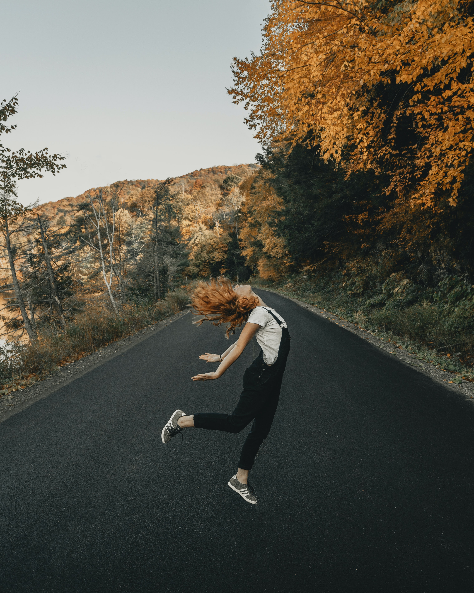
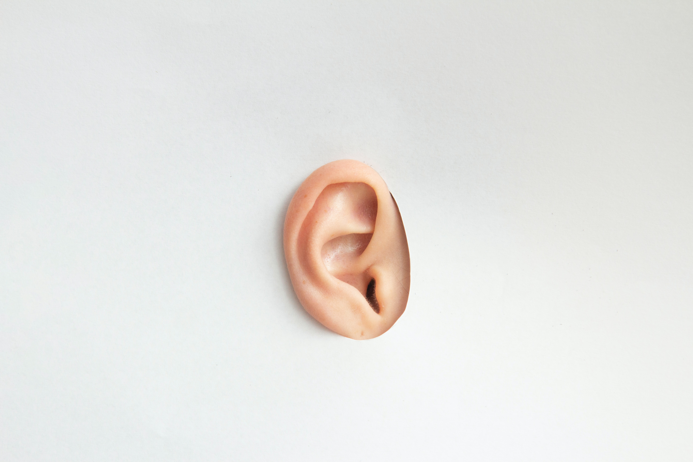
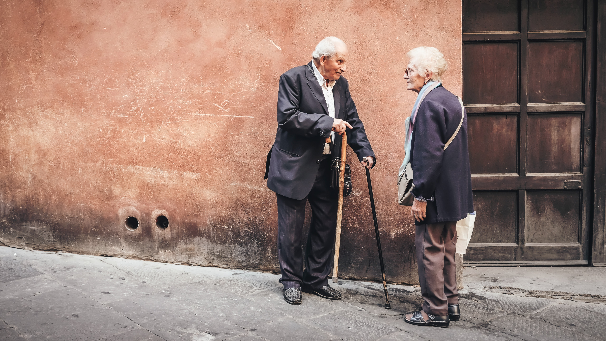

Dancing in the Moment
Challenge yourself to be curious & listen at level 6 to empower your clients. Always enjoy the music.
Sign up

Dance Steps.


Confidence in my approach
Confidence to insist on the need for confidentiality
Confidence that I can be an effective listener
Confidence to explore deeper level conversations
The most impactful activities were the roleplays and discussions about
values. It struck me how much we learnt in such a short conversation.
My ALS challenge was surrounding ESD - hopefully we can collaborate on this in the future.
@TeamFrances28, The Sheffield College